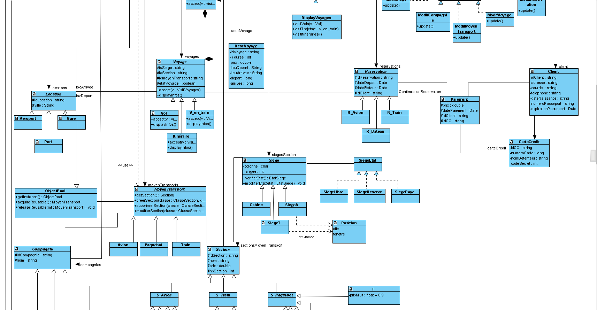
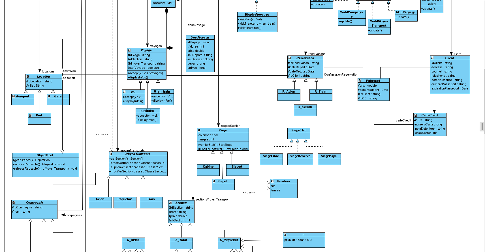

Nom: Siddharth Baichoo
Matricule: 20130259
Courriel: siddharth.baichoo@umontreal.ca
temps mis: ? heures
Nom: Hamza Bellakhdim
Matricule: 20004834
Courriel: hamza.bellakhdim@umontreal.ca
temps mis: ? heures
Nom: William Bach
Matricule: 20127144
Courriel: william.bach@umontreal.ca
temps mis: ? heures
Voici notre solution pour la tâche 3 (révision du diagramme de classes et diagrammes de séquence système et identification des modules réutilisables).
 

Nous savons que le degré de réutilisation d'une classe peut être estimé grâce à la distance de cette même classe au domaine de fondation :

Or, le fardeau est une métrique mesurant la distance d'une classe au domaine de fondation. Plus le fardeau est élevé, plus la classe est éloignée du domaine de fondation. Si l'on s'intéresse au calcul du fardeau, on remarque qu'il s'agit de la cardinalité de l'ensemble contenant toutes les classes auxquelles notre classe réfère (par association, héritage ..). Nous pouvons donc en déduire que moins une classe a de références extérieures, plus elle est susceptible d'être réutilisée. Si l'on applique ce principe à notre diagramme, les classes les plus susceptibles d'être réutilisées sont :
Les autres classes du diagramme sont soit des classes spécifiques qui ne pourraient pas être réutilisées, soit des classes manipulant les classes abstraites. Bien que les classes abstraites du diagramme ne fassent pas partie du domaine de fondation car elles ne sont pas utiles à toutes les industries, elles peuvent facilement être réutilisées dans une industrie spécifique.
Voici un lien vers un fichier texte pour lire les contraintes OCL.
Justifications du diagramme de classe
La plupart du diagramme de classe utilise la généralisation (héritage) car on peut clairement voir dans la définition des exigences (énoncé) que chaque moyen de transport différent (avion, train, bateau) est relié par les mêmes propriétés (compagnie propriétaire, infrastructure de départ et d'arrivée, concept de siège, etc..). De plus, tous les gestionnaires utilisent les mêmes fonctionnalités, c'est-à-dire ajouter, modifier et supprimer, ce qui justifie l'emploi d'une interface générale 'Main_gestionnaire'.
Nous avons utilisé une classe descriptive 'DescriptionVoyage' afin de décrire l'objet Voyage, car cela augmente la cohésion de la classe Voyage qui ne garde en attribut que ses propriétés primaires. Cela améliore la maintenance de par le fait qu'un ajout de caractéristique d'un voyage dans le futur pourra être fait plus facilement avec une classe entièrement dédiée à la description d'un voyage.
Une classe Section a la responsabilité partielle de connaître le montant du plein tarif à bord d'un voyage. C'est ensuite cette même classe et ses enfants (grâce à la généralisation) qui s'occupent de calculer le prix pour chaque section.
Notre structure utilise le modèle 'Vue-Contrôleur' afin de pouvoir optimiser le coupage de l'architecture. ll y a 2 contrôleurs : celui du niveau administrateur qui s'occupe d'envoyer les requêtes aux différents gestionnaires et celui du niveau client qui gère majoritairement les réservations de siège et les infos client.